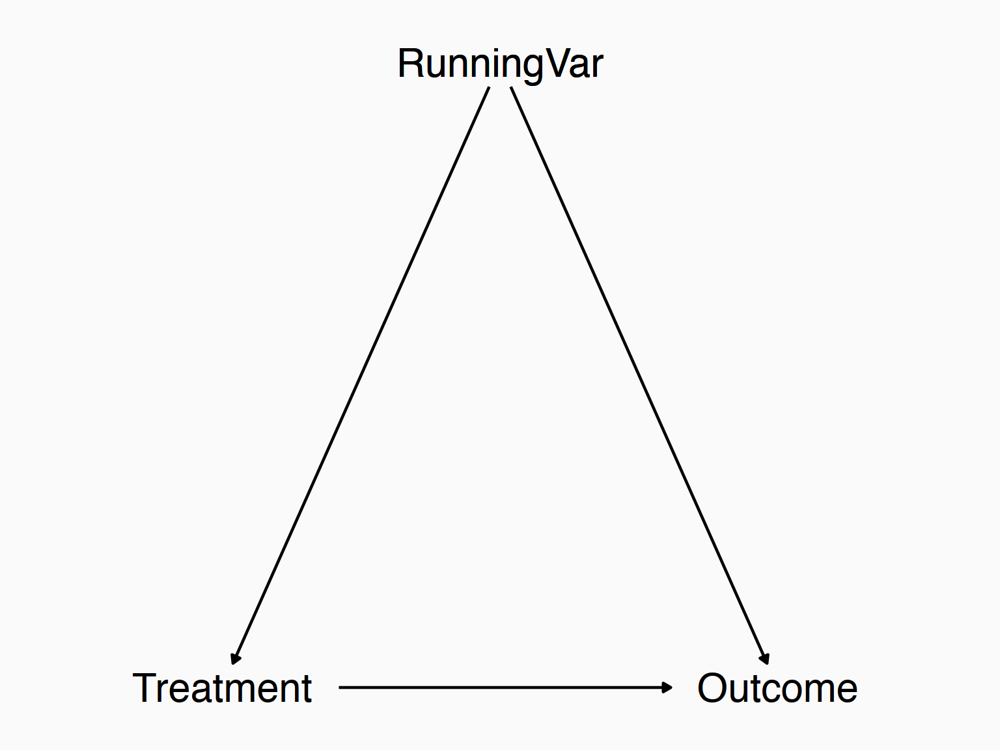
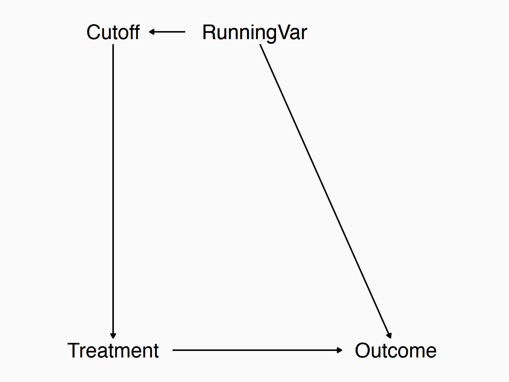
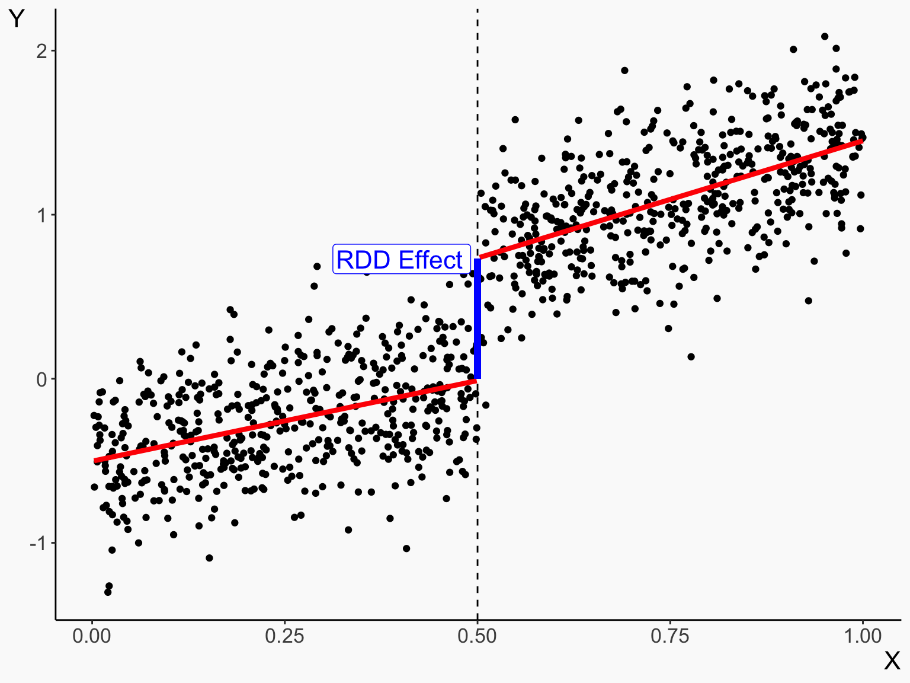
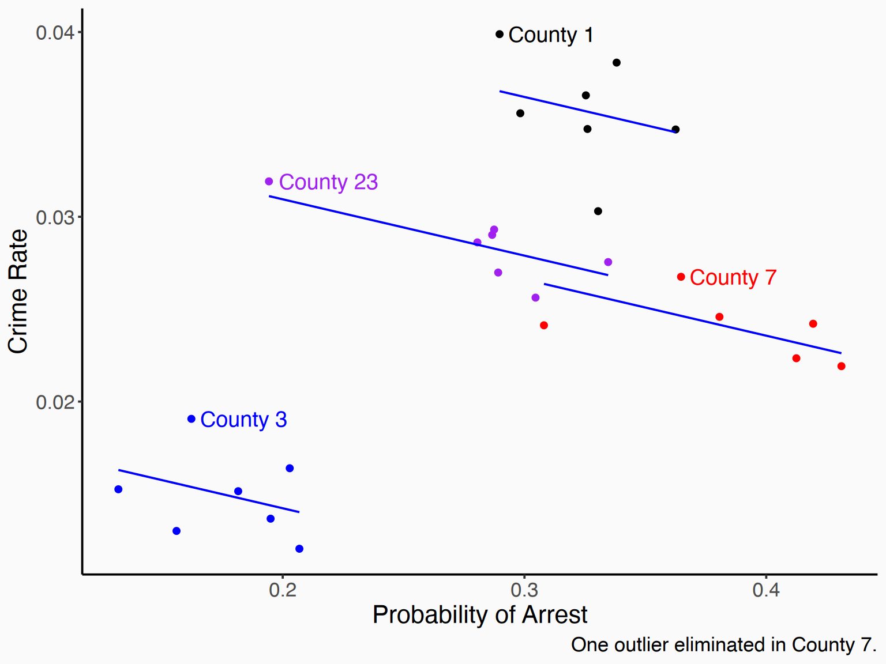
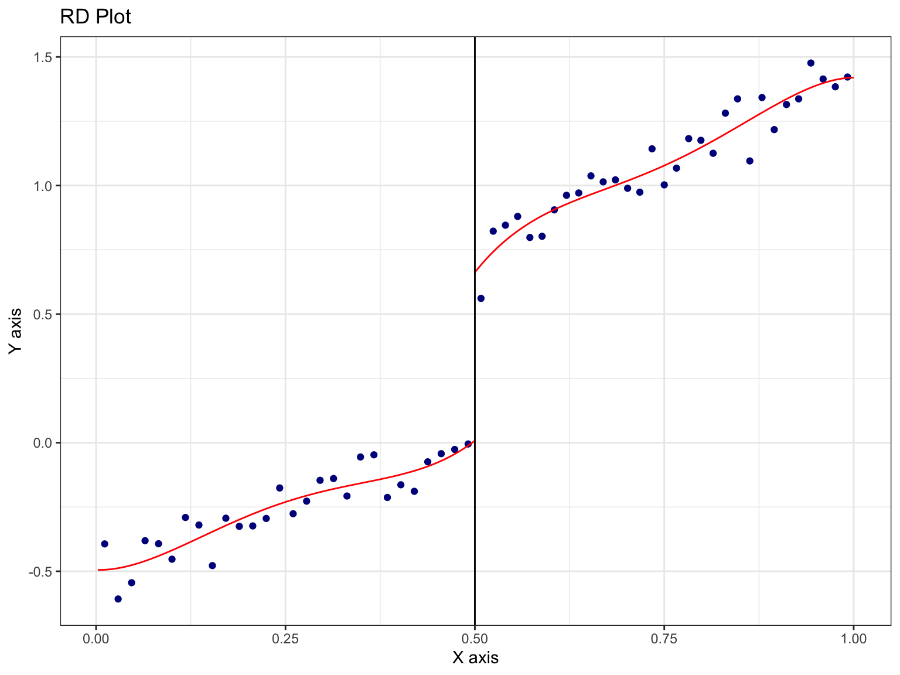

🗓️ Week 8
Regresssion Discontinuity Designs
Check-in
- We’re thinking through ways that we can identify the effect of interest without having to control for everything
- One way is by focusing on within variation - if all the endogeneity can be controlled for or only varies between-individuals, we can just focus on within variation to identify it
- Pro: control for a bunch of stuff
- Con: washes out a lot of variation! Result can be noisier if there’s not much within-variation to work with
- Also, this requires no endogenous variation over time
- That might be a tricky assumption! Often there are plenty of back doors that shift over time
Regression Discontinuity
- Today we are going to talk about Regression discontinuity design (RDD)
- RDD is currently the darling of the econometric world for estimating causal effects without running an experiment
- It doesn’t apply everywhere, but when it does, it’s very easy to buy the identification assumptions
- Not that it doesn’t have its own issues, of course, but it’s pretty good!
Regression Discontinuity
The basic idea is this:
- We look for a treatment that is assigned on the basis of being above/below a cutoff value of a continuous variable
- For example, if you get above a certain test score they let you into a “gifted and talented” program
- Or if you are just on one side of a time zone line, your day starts one hour earlier/later
- Or if a candidate gets 50.1% of the vote they’re in, 40.9% and they’re out
- Or if you’re 65 years old you get Medicaid, if you’re 64.99 years old you don’t
We call these continuous variables “Running variables” because we run along them until we hit the cutoff
Regression Discontinuity
- But wait, hold on, if treatment is driven by running variables, won’t we have a back door going through those very same running variables?? Yes!
- And we can’t just control for RunningVar because that’s where all the variation in treatment comes from. Uh oh!

Regression Discontinuity
- The key here is realizing that the running variable affects treatment only when you go across the cutoff
- So really the diagram looks like this!

Regression Discontinuity
- So what does this mean?
- If we can control for the running variable everywhere except the cutoff, then…
- We will be controlling for the running variable, closing that back door
- But leaving variation at the cutoff open, allowing for variation in treatment
- We focus on just the variation around the treatment, narrowing the range of the running variable we use so sharply that it’s basically controlled for. Then the effect of cutoff on treatment is like an experiment!
Regression Discontinuity
- Basically, the idea is that right around the cutoff, treatment is randomly assigned
- If you have a test score of 89.9 (not high enough for gifted-and-talented), you’re basically the same as someone who has a test score of 90.0 (just barely high enough)
- So if we just focus around the cutoff, we close any back doors because it’s basically random which side of the line you’re on
- But we get variation in treatment!
- This specifically gives us the effect of treatment for people who are right around the cutoff a.k.a. a “local average treatment effect” (we still won’t know the effect of being put in gifted-and-talented for someone who gets a 30)
Regression Discontinuity
- A very basic idea of this, before we even get to regression, is to create a binned chart
- And see how the bin values jump at the cutoff
- A binned chart chops the Y-axis up into bins
- Then takes the average Y value within that bin. That’s it!
- Then, we look at how those X bins relate to the Y binned values.
- If it looks like a pretty normal, continuous relationship… then JUMPS UP at the cutoff X-axis value, that tells us that the treatment itself must be doing something!
Regression Discontinuity

Concept Checks
- Why is it important that we look as norrowly as possible around the cutoff? What does this get us over comparing the entire treated and untreated groups?
- Can you think of an example of a treatment that is assigned at least partially on a cutoff?
- Why can’t we just control for the running variable as we normally would to solve the endogeneity problem?
Fitting Lines in RDD
- Looking purely just at the cutoff and making no use of the space away from the cutoff throws out a lot of useful information
- We know that the running variable is related to outcome, so we can probably improve our prediction of what the value on either side of the cutoff should be if we use data away from the cutoff to help with prediction than if we just use data near the cutoff, which is what that animation does
- We can do this with good ol’ OLS.
- The bin plot we did can help us pick a functional form for the slope
Fitting Lines in RDD
- To be clear, producing the line(s) below is our goal. How can we do it?
- The true model I’ve made is an RDD effect of .7, with a slope of 1 to the left of the cutoff and a slope of 1.5 to the right

Regression in RDD
- First, we need to transform our data
- We need a “Treated” variable that’s
TRUEwhen treatment is applied - above or below the cutoff - Then, we are going to want a bunch of things to change at the cutoff. This will be easier if the running variable is centered around the cutoff. So we’ll turn our running variable \(X\) into \(X - cutoff\) and call that \(XCentered\)
Varying Slope
- Typically, you will want to let the slope vary to either side
- In effect, we are fitting an entirely different regression line on each side of the cutoff
- We can do this by interacting both slope and intercept with \(treated\)!
- Coefficient on Treated is how the intercept jumps - that’s our RDD effect. Coefficient on the interaction is how the slope changes
\[Y = \beta_0 + \beta_1Treated + \beta_2XCentered + \beta_3Treated\times XCentered + \varepsilon\]
OLS estimation, Dep. Var.: Y
Observations: 1,000
Standard-errors: IID
Estimate Std. Error t value Pr(>|t|)
(Intercept) -0.011133 0.025999 -0.428225 0.66857986
treatedTRUE 0.746688 0.037577 19.870777 < 2.2e-16 ***
X_centered 0.982500 0.090666 10.836522 < 2.2e-16 ***
treatedTRUE:X_centered 0.446961 0.129613 3.448417 0.00058748 ***
---
Signif. codes: 0 '***' 0.001 '**' 0.01 '*' 0.05 '.' 0.1 ' ' 1
RMSE: 0.296605 Adj. R2: 0.847229Varying Slope
(as an aside, sometimes the effect of interest is the interaction term - the change in slope! This answers the question “does the effect of \(X\) on \(Y\) change at the cutoff? This is called a”regression kink” design. We won’t go more into it here, but it is out there!)
Polynomial Terms
- We don’t need to stop at linear slopes!
- Just like we brought in our knowledge of binary and interaction terms to understand the linear slope change, we can bring in polynomials too. Add a square maybe!
- Don’t get too wild with cubes, quartics, etc. - polynomials tend to be at their “weirdest” near the edges, and we don’t want super-weird predictions right at the cutoff. It could give us a mistaken result!
- A square term should be enough
Polynomial Terms
- How do we do this? Interactions again. Take any regression equation…
\[Y = \beta_0 + \beta_1X + \beta_2X^2 + \varepsilon\]
- And just center the \(X\) (let’s call it \(XC\), add on a set of the same terms multiplied by \(Treated\) (don’t forget \(Treated\) by itself - that’s \(Treated\) times the interaction!)
\[Y = \beta_0 + \beta_1XC + \beta_2XC^2 + \beta_3Treated + \beta_4Treated\times XC + \beta_5Treated\times XC^2 + \varepsilon\]
- The coefficient on \(Treated\) remains our “jump at the cutoff” - our RDD estimate!
feols(Y ~ X_cent..
Dependent Var.: Y
Constant -0.0340 (0.0385)
X_centered 0.6990. (0.3641)
treatedTRUE 0.7677*** (0.0577)
X_centered square -0.5722 (0.7117)
X_centered x treatedTRUE 0.7509 (0.5359)
treatedTRUE x I(X_centered^2) 0.5319 (1.034)
_____________________________ __________________
S.E. type IID
Observations 1,000
R2 0.84779
Adj. R2 0.84702
---
Signif. codes: 0 '***' 0.001 '**' 0.01 '*' 0.05 '.' 0.1 ' ' 1Concept Checks
- Would the coefficient on \(Treated\) still be the regression discontinuity effect estimate if we hadn’t centered \(X\)? Why or why not?
- Why might we want to use a polynomial term in our RDD model?
- What relationship are we assuming between the outcome variable and the running variable if we choose not to include \(XCentered\) in our model at all (i.e. a “zero-order polynomial”)
Assumptions
- We knew there must be some assumptions lurking around here
- Some are more obvious (we should be using the correct functional form)
- Others are trickier. What are we assuming about the error term and endogeneity here?
- Specifically, we are assuming that the only thing jumping at the cutoff is treatment
- Sort of like parallel trends, but maybe more believable since we’ve narrowed in so far
- For example, if having an income below 150% of the poverty line gets you access to food stamps AND to job training, then we can’t really use that cutoff to get the effect of just food stamps
- Or if the proportion of people who are self-employed jumps up just below 150% (based on reported income), that’s a back door too!
- The only thing different about just above/just below should be treatment
Graphically

Other Difficulties
More assumptions, limitations, and diagnostics!
- Windows
- Granular running variables
- Manipulated running variables
- Fuzzy regression discontinuity
Windows
- The basic idea of RDD is that we’re interested in the cutoff
- The points away from the cutoff are only useful in helping us predict values at the cutoff
- Do we really want that full range? Is someone’s test score of 30 really going to help us much in predicting \(Y\) at a test score of 89?
- So we might limit our analysis within just a narrow window around the cutoff, just like that initial animation we saw!
- This makes the exogenous-at-the-jump assumption more plausible, and lets us worry less about functional form (over a narrow range, not too much difference between a linear term and a square), but on the flip side reduces our sample size considerably
Windows
- Pay attention to the sample sizes, accuracy (true value .7) and standard errors!
m1 <- feols(Y~treated*X_centered, data = df)
m2 <- feols(Y~treated*X_centered, data = df %>% filter(abs(X_centered) < .25))
m3 <- feols(Y~treated*X_centered, data = df %>% filter(abs(X_centered) < .1))
m4 <- feols(Y~treated*X_centered, data = df %>% filter(abs(X_centered) < .05))
m5 <- feols(Y~treated*X_centered, data = df %>% filter(abs(X_centered) < .01))
etable(m1,m2,m3,m4,m5, keep = 'treatedTRUE') m1 m2
Dependent Var.: Y Y
treatedTRUE 0.7467*** (0.0376) 0.7723*** (0.0566)
treatedTRUE x X_centered 0.4470*** (0.1296) 0.6671. (0.4022)
________________________ __________________ __________________
S.E. type IID IID
Observations 1,000 492
R2 0.84769 0.74687
Adj. R2 0.84723 0.74531
m3 m4 m5
Dependent Var.: Y Y Y
treatedTRUE 0.7086*** (0.0900) 0.6104*** (0.1467) 0.5585 (0.4269)
treatedTRUE x X_centered -1.307 (1.482) 6.280 (4.789) 41.21 (72.21)
________________________ __________________ __________________ _______________
S.E. type IID IID IID
Observations 206 93 15
R2 0.69322 0.59825 0.48853
Adj. R2 0.68867 0.58470 0.34904
---
Signif. codes: 0 '***' 0.001 '**' 0.01 '*' 0.05 '.' 0.1 ' ' 1Granular Running Variable
- One assumption we’re making is that the running variable varies more or less continuously
- That makes it possible to have, say, a test score of 89 compared to a test score of 90 it’s almost certainly the same as except for random chance
- But what if our data only had test score in big chunks? I don’t know you’re 89 or 90, I just know you’re “80-89” or “90-100”
- A lot less believable that the only difference between these groups is random chance and we’ve closed the back doors by focusing on the cutoff
- Plenty of other things change between 80 and 100! That’s not “smooth at the cutoff”
Granular Running Variable
- Not a whole lot we can do about this
- There are some fancy RDD estimators that allow for granular running variables
- But in general, if this is what you’re facing, you might be in trouble
- Before doing an RDD, think “is it plausible that someone with the highest value just below the cutoff, and someone with the lowest value just above the cutoff are only at different values because of random chance?”
Looking for Lumping
- Ok, now let’s go back to our continuous running variables
- What if the running variable is manipulated?
- Imagine you’re a teacher grading the gifted-and-talented exam. You see someone with an 89 and think “aww, they’re so close! I’ll just give them an extra point…”
- Or, if you live just barely on one side of a time zone line, but decide to move to the other side because you prefer waking up later
- Suddenly, that treatment is a lot less randomly assigned around the cutoff!
Looking for Lumping
- If there’s manipulation of the running variable around the cutoff, we can often see it in the presence of lumping
- I.e. if there’s a big cluster of observations to one side of the cutoff and a seeming gap missing on the other side
Looking for Lumping
- Here’s an example from the real world in medical research - statistically, p-values should be uniformly distributed
- But it’s hard to get insignificant results published in some journals. So people might “p-hack” until they find some form of analysis that’s significant, and also we have heavy selection into publication based on \(p < .05\). Can’t use that cutoff for an RDD!

Looking for Lumping
- How can we look for this stuff?
- We can look graphically by just checking for a jump at the cutoff in number of observations after binning
df_bin_count <- df %>%
# Select breaks so that one of hte breakpoints is the cutoff
mutate(X_bins = cut(X, breaks = 0:10/10)) %>%
group_by(X_bins) %>%
count()Looking for Lumping
- The first one looks pretty good. We have one that looks not-so-good on the right

Looking for Lumping
- Another thing we can do is do a “placebo test”
- Check if variables other than treatment or outcome vary at the cutoff
- We can do this by re-running our RDD but just swapping out some other variable for our outcome
- If we get a significant jump, that’s bad! That tells us that other things are changing at the cutoff which implies some sort of manipulation (or just super lousy luck)
Regression Discontinuity in R
- We can specify an RDD model by just telling it the dependent variable \(Y\), the running variable \(X\), and the cutoff \(c\).
- We can also specify how many polynomials to us with p
- (it applies the polynomials more locally than our linear OLS models do - a bit more flexible without weird corner preditions)
- It will also pick a window for us with h
- Plenty of other options
- Including a fuzzy option to specify actual treatment outside of the running variable/cutoff combo
rdrobust
- We’ve gone through all kinds of procedures for doing RDD in R already using regression
- But often, professional researchers won’t do it that way!
- We’ll use packages and formulas that do things like “picking a bandwidth (window)” for us in a smart way, or not relying so strongly on linearity
- The rdrobust package does just that!
rdrobust
summary(rdrobust(df$Y, df$X, c = .5))Sharp RD estimates using local polynomial regression.
Number of Obs. 1000
BW type mserd
Kernel Triangular
VCE method NN
Number of Obs. 501 499
Eff. Number of Obs. 185 170
Order est. (p) 1 1
Order bias (q) 2 2
BW est. (h) 0.174 0.174
BW bias (b) 0.293 0.293
rho (h/b) 0.594 0.594
Unique Obs. 501 499
=============================================================================
Method Coef. Std. Err. z P>|z| [ 95% C.I. ]
=============================================================================
Conventional 0.707 0.085 8.311 0.000 [0.540 , 0.874]
Robust - - 6.762 0.000 [0.484 , 0.878]
=============================================================================rdrobust
summary(rdrobust(df$Y, df$X, c = .5, fuzzy = df$treatment))Sharp RD estimates using local polynomial regression.
Number of Obs. 1000
BW type mserd
Kernel Triangular
VCE method NN
Number of Obs. 501 499
Eff. Number of Obs. 185 170
Order est. (p) 1 1
Order bias (q) 2 2
BW est. (h) 0.174 0.174
BW bias (b) 0.293 0.293
rho (h/b) 0.594 0.594
Unique Obs. 501 499
=============================================================================
Method Coef. Std. Err. z P>|z| [ 95% C.I. ]
=============================================================================
Conventional 0.707 0.085 8.311 0.000 [0.540 , 0.874]
Robust - - 6.762 0.000 [0.484 , 0.878]
=============================================================================rdrobust
- We can even have it automatically make plots of our RDD! Same syntax
rdplot(df$Y, df$X, c = .5)
That’s it!
- That’s what we have for RDD
- Go explore the regression discontinuity Seminar
- And the paper to read!